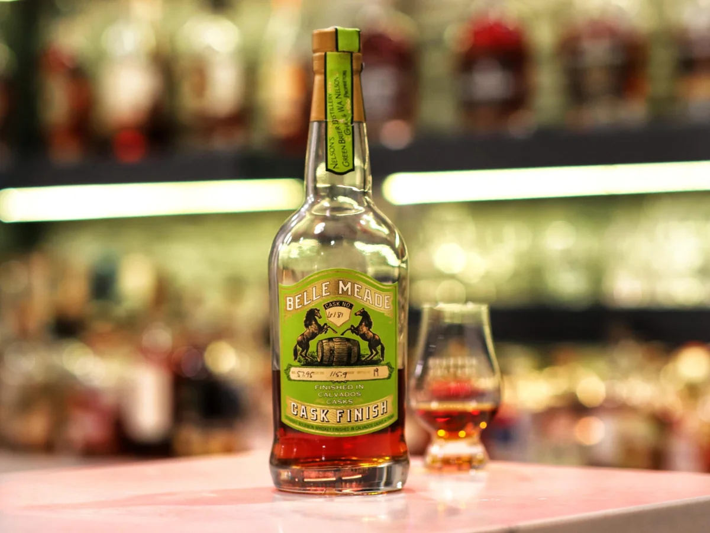

Assessment of the identified published tasting sample. No transfer to a different batch, barrel, proof or formulation.
The short version
Apple, spice and wood remain integrated from aroma to finish, with sufficient sweetness to prevent drying tannins. The sensory account supports very good execution; a matched bottle-price reference was not established.
2026 research correction: the bottle was a November 2021 release tasted in August 2024, not a newly issued 2024 Calvados bottling. The Bourbon Culture cask register identifies historical Calvados Cask 6181 at 115.9 proof; the specific bottle number tasted in 2024 was not published.
History and line identity
Calvados Cask brings apple-brandy cask influence to Belle Meade bourbon. The dossier follows the bottle reviewed in 2024, with its apple, spice and wood integration assessed independently of neighboring finishes. Its exact proof and an identity-matched price have not been recovered in the accepted record. Those gaps prevent a new strength assertion, Value number or invented buy-price ladder.
Assessment of the identified published tasting sample. No transfer to a different batch, barrel, proof or formulation.
Production and identity
Belle Meade Calvados Cask Finish — 2024 reviewed bottle: Bourbon; See production and source scope. Exact reviewed sample proof, where authenticated; a different barrel or batch may vary. Unverified proof is N/A.; NAS. Composition: Undisclosed proportions. The matched source classifies this bottle as Bourbon and identifies the distillery as See production and source scope. Grain proportions and maturation apply to this bottle only. Finishes, blend components and unknown sourcing are not inferred from the brand name.
The matched source classifies this bottle as Bourbon and identifies the distillery as See production and source scope. Grain proportions and maturation apply to this bottle only. Finishes, blend components and unknown sourcing are not inferred from the brand name.
Reported recipe from the identified producer/review metadata; undisclosed proportions remain unknown. Corrections and discrepancies appear in the identity note.
One matched substantive sensory source establishes a reasoned estimate, not cross-review consensus. Other cited reviews may concern different barrels and are marked as context.
Release-year and barrel reconciliation
The 2024 firsthand critic identifies an 8–11-year high-rye bourbon blend, followed by 36 months in La Ribaude Calvados wood, bottled for release in November 2021. An independent barrel inventory lists Cask 6181 / 115.9 proof. This establishes the historic named cask specification, not the review sample’s individual bottle number.
Critical synthesis
How the sip develops. Baked apple pastry and gentle spice surround woody bourbon; raisins, caramel and vanilla remain balanced through the warm finish. Apple, spice and wood remain integrated from aroma to finish, with sufficient sweetness to prevent drying tannins. The sensory account supports very good execution; a matched bottle-price reference was not established.
This is an editorial synthesis of the credited independent tasting evidence, with the original sample limits retained.
Documented sensory profile
Baked apple pastry and gentle spice surround woody bourbon; raisins, caramel and vanilla remain balanced through the warm finish.
The saved summary does not reliably allocate every observation to nose, palate and finish; those stages are not invented.
Single-source assessment; no cross-review consensus
Apple, spice and wood remain integrated from aroma to finish, with sufficient sweetness to prevent drying tannins. The sensory account supports very good execution; a matched bottle-price reference was not established.
Disagreement / dissent
One matched substantive sensory source establishes a reasoned estimate, not cross-review consensus. Other cited reviews may concern different barrels and are marked as context.
- thebourbonculture.com — matched tasting; Assessment of the identified published tasting sample. No transfer to a different batch, barrel, proof or formulation.
Quality assessment and calibration
Provisional for the documented evidence, batch or barrel scope. Established Bourbon 1/5/10 references: severe defects, ordinary Maker’s/Bulleit execution, and the retained 2024 Michter’s twenty-year reference. Apple, spice and wood remain integrated from aroma to finish, with sufficient sweetness to prevent drying tannins. The sensory account supports very good execution; a matched bottle-price reference was not established.
Published sensory evidence: Baked apple pastry and gentle spice surround woody bourbon; raisins, caramel and vanilla remain balanced through the warm finish.
One matched substantive sensory source establishes a reasoned estimate, not cross-review consensus. Other cited reviews may concern different barrels and are marked as context. These are editorial assessments of cited tasting evidence, not a claim that the dossier author physically tasted the bottle. Published critic grades are not averaged or converted.
Calibration policy · Anchor ledger. No marker native; † parent; ‡ universal; § provisional. The provisional marker takes precedence over its underlying method.
Consumer pulse and scope
The matched published tasting accounts establish this dossier’s sensory basis. A broad consumer consensus is not established for the exact bottle or barrel. The calibration marker and confidence describe the strength and scope of the available evidence; popularity and aggregate stars do not supply missing tasting detail.
Price and drinking Value
No authenticated exact-expression bottle price; another vintage, barrel or resale quote is not substituted.
A source listing does not guarantee stock. Historical MSRP and review prices are references for Value, not current offers. Packaging, rarity, resale and collector premiums confer no drinking-value bonus.
Buy-price bands remain N/A until both an exact-expression Quality estimate and a defensible price exist.
Buy bands are withheld: No authenticated exact-expression bottle price; another vintage, barrel or resale quote is not substituted.
Collector price is not drinking Value
A secondary-market record lists a $300 auction sale (March 16, 2025) for the 115.9-proof 750 mL expression. This is a collector resale observation, not original MSRP, a normal retail shelf offer or NC ABC price. Value remains N/A; the previous Quality 7.8 is retained.
What actually competes with this bottle?
These alternatives are chosen for this expression’s style, strength, maturity, documented quality and purchase role. Every price below retains its own dated reference; none implies current stock.
| Bottle | Proof / age | 750 mL reference | Why consider it |
|---|---|---|---|
| Woodford Reserve Double Oaked | 90.4 · NAS · second-barrel maturation | $64.95 NC ABC regular retail | . Breaking Bourbon finds rich aroma with a less coherent palate. This is a drinking alternative, with its own recipe and source scope. |
| Rabbit Hole Dareringer | 93.0 · NAS | $80.00 Published review price / original MSRP — 2021; dated reference | . Rich wine fruit and caramel. This is a drinking alternative, with its own recipe and source scope. |
| Prichard’s Double Barreled Bourbon — 90-proof reviewed bottle | 90 · 9 Years before rebarreling, producer-reported to critic | $90.00 Published review price / MSRP — 2017 | . Citrus and salted caramel develop into spicy vanilla, rye bread and gingerbread. This is a drinking alternative, with its own recipe and source scope. |
| Joseph Magnus Triple Cask Bourbon | 100 · NAS · no guaranteed current ten-year statement | $99.95 NC ABC regular retail | . Retain 7.8. Breaking Bourbon and the Whiskey Shelf find rich finished fruit with a less persuasive palate or finish than the aroma. This is a drinking alternative, with its own recipe and source scope. |
| 1792 Port Finish | 88.9 · NAS | $40.00 Published review price / original MSRP — 2016; dated reference | . Apple, nuts and spice. This is a drinking alternative, with its own recipe and source scope. |
How to approach this expression
Serving recommendations are editorial inferences from this expression’s documented sensory profile and strength; they are not a claim of first-hand cocktail testing.
Neat: establish the bottle’s balance
Begin Belle Meade Calvados Cask Finish — 2024 reviewed bottle at the documented strength with a small room-temperature pour. Follow baked apple pastry and gentle spice surround woody bourbon. The retained assessment’s central qualification is: Apple, spice and wood remain integrated from aroma to finish, with sufficient sweetness to prevent drying tannins. The sensory account supports very good execution; a matched bottle-price reference was not established.
Water: test the specific limitation
For Belle Meade Calvados Cask Finish — 2024 reviewed bottle (the documented strength), Try the first pour without water. A low-strength sample has less room for extra dilution; use a few drops only in a separate comparison pour and stop if texture or fruit loses definition. The change to watch is the balance around raisins, caramel and vanilla remain balanced through the warm finish.
Old Fashioned: use the existing sweetness
Belle Meade Calvados Cask Finish — 2024 reviewed bottle carries raisins, caramel and vanilla remain balanced through the warm finish at the documented strength. Begin with a light hand on syrup; the finishing treatment supplies flavor that deserves room beside the bitters.
Rocks: follow the ending as ice melts
Try Belle Meade Calvados Cask Finish — 2024 reviewed bottle over a large cube in a separate pour. Watch the transition to raisins, caramel and vanilla remain balanced through the warm finish. Keep dilution gradual so the quieter finish is not lost before the drink is complete.
Sources and evidence limits
Producer / specifications
Independent sensory evidence
- thebourbonculture.com — Assessment of the identified published tasting sample. No transfer to a different batch, barrel, proof or formulation.
Image credits
Original image source — Exact reviewed bottle photograph; credited to thebourbonculture.com. Assessment of the identified published tasting sample. No transfer to a different batch, barrel, proof or formulation.
Research date: 2026-10-06. Producer descriptions establish specifications, not independent tasting votes. Serving and purchase guidance are editorial inferences. Unviewed videos and aggregate stars do not supply sensory evidence. Dated prices do not imply current stock.
Supplemental dated identity and resale evidence
- Bourbon Culture — historical cask-strength register: names Belle Meade Craftsman Calvados Cask 6181, 115.9 proof; barrel evidence, not an additional tasting vote.
- Bottle Blue Book — Calvados Cask transaction history: 115.9-proof 750 mL and a $300 auction sale March 16, 2025; collector resale, excluded from Value.